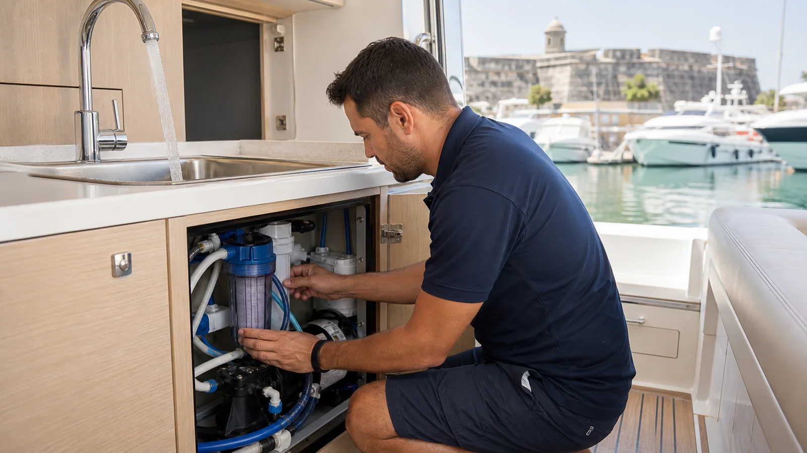

En el clima cálido de Cartagena, el agua que permanece quieta pierde calidad con rapidez. Sedimento, biofilm, una manguera inadecuada o un filtro vencido pueden devolver el olor incluso después de llenar con agua nueva.
Localiza el origen antes de limpiar
- Compara todos los grifos. Si ocurre en uno solo, revisa ese ramal, aireador o manguera.
- Separa fría y caliente. Olor solo en caliente orienta hacia calentador, ánodo o agua retenida allí.
- Prueba la fuente de llenado. Usa un recipiente limpio antes de que el agua entre al bote.
- Revisa filtro y tanque. Busca fecha, sedimento, acceso, respiradero y estado de tapas.
- Pregunta cuánto tiempo estuvo almacenada. Los periodos largos sin circulación favorecen depósitos y microorganismos.
Causas habituales a bordo
Agua estancada y biofilm
Una película puede formarse en paredes, mangueras y conexiones. Cambiar el agua reduce el olor temporalmente, pero no remueve el origen adherido.
Filtro saturado o incorrecto
Un cartucho sin recambio puede acumular sedimento. También debe respetarse dirección de flujo, capacidad y uso indicado; no todo filtro vuelve potable una fuente desconocida.
Respiradero, tapa o manguera
Una tapa sin sello, respiradero contaminado o manguera no apta para agua potable puede aportar olor. Inspecciona puntos de entrada y evita almacenar productos químicos cerca.
Calentador de agua
El olor solo en agua caliente puede relacionarse con agua retenida, sedimento o componentes del calentador. Sigue el manual antes de drenar, aislar o intervenir un equipo caliente y presurizado.
Cómo se sanea correctamente
El procedimiento depende de volumen, materiales, bomba, calentador y filtros. Incluye drenar, limpiar accesos y sedimento, desinfectar con concentración y tiempo controlados, hacer circular por cada ramal y enjuagar con agua segura. El CDC y la EPA recomiendan limpieza y desinfección de sistemas de almacenamiento, especialmente después de reparación o contaminación.
Preguntas frecuentes
¿Por qué regresa el olor después de llenar?
Porque el origen puede seguir en tanque, mangueras, calentador o filtro. El agua nueva vuelve a entrar en contacto con esas superficies.
¿Se puede beber?
No se confirma por olor. Ante duda, usa agua embotellada y considera análisis después del saneamiento.
¿Cada cuánto se limpia?
Según uso, fuente, almacenamiento y manual. Debe hacerse también después de una reparación, contaminación o largo periodo sin uso.
¿El agua de tu yate tiene olor o sedimento?
Revisamos tanque, bomba, filtros, mangueras y calentador para definir el procedimiento correcto.
Solicitar revisión